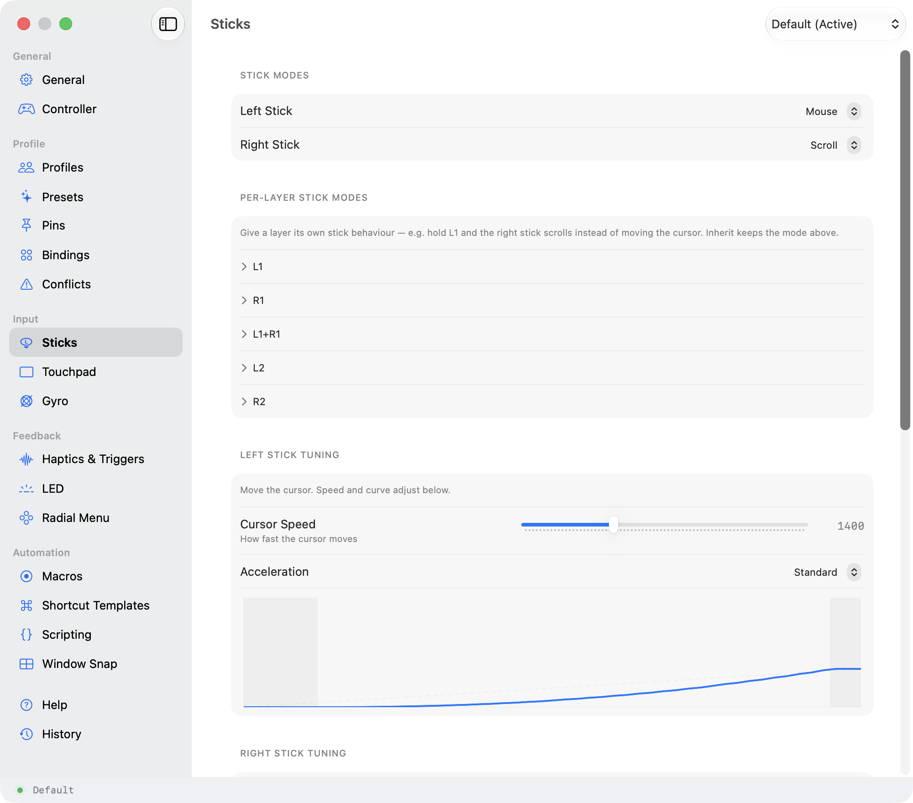

When a mouse hurts, a controller doesn't.
A game controller rests in relaxed hands: no pinch grip, no fine wrist work, no reaching across the desk. If a mouse or trackpad is tiring, painful, or hard to reach, Steer turns the controller into a complete way to run your Mac: point, click, type, and scroll, with a cursor you can slow right down.
When it ships there is a 14-day free trial: no account, no card. Try it on a good day and a hard one before you decide.


Everything the mouse does, in a shape that's kinder to hold.
Held in relaxed hands, not gripped
Your hands stay loose around the controller instead of pinching a mouse or splaying over a trackpad. Nothing to grab, drag, or reach for across the desk.
Slow the cursor right down
A cursor-speed slider and a response curve you can shape mean the pointer can be as gentle and forgiving as you need: small, deliberate moves instead of a jumpy one. Tremor and low precision are what the curve is for.
A button is a click
No mouse button to press while holding steady, because a click is just a button, and you choose which one. Left click, right click, double-click, drag: each can live on the button that's easiest for you to reach.
One-handed, without giving anything up
Hold one of the buttons on the top edge and every other button changes job, so a handful of buttons within one thumb's reach can carry a full set of actions. Steer is usable with a single hand, and you decide the layout.
Type without a keyboard
An on-screen keyboard you drive from the controller means you can enter text (a search box, a file name, a message) without moving to a physical keyboard. And if a stick is hard, on most PlayStation pads and the Switch Pro you can tilt the controller to aim instead.
Feedback you can feel
A gentle buzz can confirm an action landed, so you are not relying on watching the screen. Quiet, optional, and tuned to a strength that suits you.
You don't have to get back up
Most setups like this do four things out of five, and the fifth sends you back to the desk. Typing, an app's own menus, moving windows, launching apps: they are all on the controller, so the trip back does not happen. The login screen and Touch ID are the honest exceptions.
A great input device, that happens to help.
Steer isn't a medical device and this isn't medical advice. It just turns out that a controller you hold in relaxed hands is, for a lot of people, the most comfortable way to run a computer.
Comfort is personal, so the honest test is your own hands. The 14-day trial takes no card and no account. Try it on a good day and a hard one, and keep it only if it earns its place.
Steer is finishing up. Join the list and I'll email you the day the trial is ready.
Have a specific need, like a particular controller, a one-handed layout, or a question about your setup? Email steer@seanfloyd.dev and a real person answers.